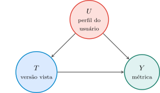
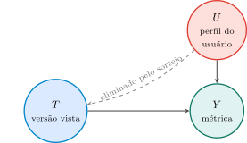
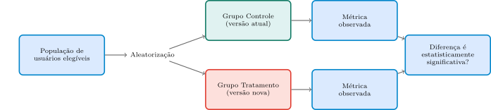
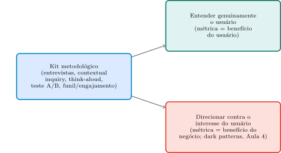

Aula 5: Entendendo e Direcionando Usuários — Pesquisa Qualitativa, Teste A/B e Tecnologia Persuasiva
Computação e Sociedade
1 Da Fricção Deliberada ao Método Que a Produz
A Aula 4 fechou mostrando que a fricção que um usuário sente contra um sistema nem sempre é acidente estrutural: às vezes é presença deliberada — alguém, no papel de “Stakeholder de negócio” (a tabela de papéis do Bloco 2 daquela aula), escolhe otimizar por uma métrica de negócio (retenção, receita) contra o interesse do próprio usuário. O caso Amazon/FTC — o “Iliad Flow” de cancelamento do Prime — mostrou esse mecanismo em escala real, com consequência regulatória bilionária.
O que ficou por explicar é como, concretamente, uma equipe de produto decide o que construir e como saber se uma mudança “funcionou”. Ninguém constrói um fluxo de seis cliques por acaso, e ninguém prova que um fluxo de um clique é melhor sem medir alguma coisa. Por trás de toda decisão desse tipo — a favor ou contra o usuário — existe um kit de ferramentas metodológico concreto: pesquisa qualitativa (entrevistas, observação do usuário em seu próprio ambiente, testes de usabilidade) e experimentação quantitativa (testes controlados, métricas de funil e engajamento). Esse kit é neutro em si — a mesma ferramenta que revela uma necessidade genuína do usuário pode, nas mãos erradas (ou com a métrica errada), desenhar o comportamento dele contra o próprio interesse. Hoje abrimos essa caixa-preta.
- O que é, de fato, um método de pesquisa qualitativa de usuário — e o que cada técnica revela que as outras não revelam?
- Como funciona um teste A/B por trás da tela, e quando o resultado de um teste A/B pode enganar quem o lê?
- O que é “tecnologia persuasiva” — e por que a interatividade dá aos computadores uma vantagem de persuasão que a mídia tradicional nunca teve?
- O mesmo método pode, ao mesmo tempo, revelar uma necessidade genuína do usuário e ser usado para manipulá-lo — onde exatamente fica essa bifurcação?
- Que responsabilidade ética surge quando “usuários” viram, sem saber, sujeitos de um experimento controlado?
Um problema motivador concreto: imagine uma equipe de produto que muda a cor de um botão de “Assinar” de azul para laranja, e a taxa de cliques sobe 8% na semana seguinte. A equipe anuncia “vitória”: mais gente assinando. Mas essa única métrica (“cliques no botão”) esconde perguntas inteiras — os 8% a mais eram pessoas que realmente queriam assinar, ou pessoas confusas que clicaram e cancelaram dias depois? O efeito ainda existe em um mês, ou era só curiosidade pela cor nova? A mesma pergunta (“como saber que uma mudança é boa?”) é o fio que atravessa a aula inteira — dos métodos que respondem a essa pergunta até o ponto em que a própria pergunta pode ser feita da forma errada, de propósito.
Se a única coisa que uma equipe de produto mede é “quantas pessoas clicaram no botão”, o que exatamente essa métrica deixa de fora sobre a experiência real do usuário — e por que uma métrica de clique, sozinha, não decide se a mudança foi boa?
Dica: pense na diferença entre uma ação de curtíssimo prazo (o clique em si) e o que o usuário realmente queria alcançar ao clicar.
- □ Se a métrica de sucesso fosse redefinida de “cliques no botão” para “assinaturas que seguem ativas 90 dias depois”, uma mudança de cor que só confunde o usuário e gera cliques acidentais deixaria de parecer uma vitória.
- □ No limite em que todo usuário que clica no botão de fato queria assinar e permanece assinante indefinidamente, a métrica “cliques no botão”, sozinha, deixaria de ter qualquer risco de enganar quem a lê.
- □ A mesma lógica de “uma métrica de curtíssimo prazo pode esconder um resultado ruim de médio prazo” se aplicaria a um aplicativo de namoro que mede sucesso apenas pelo número de conversas iniciadas, sem nunca medir se essas conversas levam a encontros reais.
- □ Como a taxa de cliques subiu 8% de forma mensurável, isso já basta para provar que o novo design do botão é, objetivamente, melhor do que o antigo para os interesses do usuário.
2 O Kit de Ferramentas Qualitativo
Antes de qualquer número, uma equipe de produto precisa entender, em profundidade, o que o usuário está tentando fazer — e por quê. Três técnicas qualitativas cobrem essa necessidade, cada uma revelando algo que as outras não revelam, cada uma com sua própria forma de execução, seu próprio ponto cego e sua própria exigência de consentimento:
Entrevistas estruturadas e semiestruturadas. Uma conversa guiada por um roteiro de perguntas (estruturada: roteiro fixo, igual para todos os entrevistados; semiestruturada: roteiro-base, com liberdade de aprofundar um ponto inesperado). Revela o que o usuário diz que faz, pensa e precisa — mas depende da capacidade dele de se lembrar e articular seu próprio comportamento, o que nem sempre é confiável (as pessoas racionalizam hábitos, esquecem detalhes, respondem o que acham que o entrevistador quer ouvir).
Na prática: o roteiro tipicamente começa com perguntas abertas e neutras (“me conte como você costuma…”) antes de perguntas fechadas e específicas, para não induzir a resposta — uma pergunta como “você não acha o cadastro confuso?” já entrega ao entrevistado a resposta esperada (viés de indução) e deve ser evitada. Quantas pessoas entrevistar? Não há um número universal, mas um achado empírico recorrente na literatura de métodos qualitativos — Guest, Bunce & Johnson (2006), estudando entrevistas com uma população razoavelmente homogênea — é que a maior parte dos temas novos já apareceu depois de cerca de \(12\) entrevistas: entrevistas adicionais, a partir daí, tendem a confirmar temas já vistos em vez de revelar temas inéditos, fenômeno que a literatura chama de saturação teórica. É uma regularidade empírica, não uma lei fixa — populações mais heterogêneas exigem mais entrevistas para saturar.
Consentimento: o entrevistado sabe, desde o convite, que está sendo estudado — não há observação disfarçada.
Contextual inquiry (investigação contextual). Em vez de perguntar sobre o comportamento, o pesquisador observa o usuário fazendo a tarefa real, no próprio ambiente de uso (o escritório, o chão de fábrica, a própria casa) — frequentemente fazendo perguntas pontuais no meio da observação (“por que você fez isso agora?”). Revela processos tácitos: coisas que o usuário sabe fazer mas não sabe descrever verbalmente, porque nunca precisou explicar aquilo para ninguém (um atalho de teclado que virou reflexo, uma pasta de arquivos organizada de um jeito que só faz sentido para quem a usa todo dia). É mais cara e lenta do que uma entrevista, mas revela o que a entrevista sozinha não revelaria.
- Na prática: a técnica foi formalizada por Beyer & Holtzblatt
- sob o nome de Contextual Design, em torno de um princípio que os autores chamam de “parceria” (partnership): o pesquisador não é um observador silencioso e invisível, mas negocia com o usuário um papel de aprendiz, interrompendo a tarefa para perguntar sempre que algo não fizer sentido — o oposto de uma câmera escondida. Poucas sessões (tipicamente entre \(4\) e \(10\)) já bastam, porque cada uma é longa (horas) e densa em detalhe, ao custo de uma logística real: é a equipe que precisa se deslocar até o ambiente do usuário, não o contrário.
- Viés a evitar e consentimento: a simples presença de um observador pode mudar o comportamento observado — o usuário se comporta de um jeito mais “correto” ou cuidadoso do que faria sozinho, fenômeno conhecido como efeito Hawthorne — o que limita, mas não anula, o valor da técnica. E, diferente de uma câmera oculta, a investigação contextual exige consentimento explícito do usuário antes de a observação começar: ele sabe que está sendo observado, mesmo que isso custe alguma perda de naturalidade.
- Na prática: a técnica foi formalizada por Beyer & Holtzblatt
Teste de usabilidade com protocolo think-aloud (pensar em voz alta). O usuário recebe uma tarefa concreta para realizar dentro do próprio sistema (ex.: “encontre e cancele o pedido #4521”) e é instruído a verbalizar seu raciocínio em tempo real enquanto age — “estou procurando um botão de cancelar… não vejo nenhum aqui… vou tentar o menu de configurações”. Revela pontos de confusão no exato momento em que acontecem, sem depender da memória posterior do usuário (diferente da entrevista) e sem exigir a observação prolongada da investigação contextual — mas só funciona para tarefas específicas e observáveis dentro do próprio sistema, não para entender o contexto de vida mais amplo do usuário.
Na prática: o número de participantes por rodada costuma ser pequeno — a heurística mais citada na área, popularizada por Jakob Nielsen (2000) a partir de um modelo probabilístico anterior (Nielsen & Landauer, 1993), é a de que cerca de \(5\) usuários já revelam a maior parte (algo como \(80\)–\(85\%\)) dos problemas de usabilidade de uma interface — o que favorece rodadas curtas e iterativas em vez de uma rodada única e grande. É uma regra prática, não uma garantia matemática: pesquisas posteriores (ex.: Faulkner, 2003) mostraram que a fração de problemas encontrados varia bastante conforme quais \(5\) usuários, em particular, são escolhidos. Um risco do moderador: conduzir o usuário (“tenta ali, no canto superior”) em vez de deixá-lo explorar e falhar sozinho — a chamada leading the witness — o que esconde exatamente a confusão que o teste deveria revelar.
Consentimento: a sessão é tipicamente gravada (tela e/ou voz) para análise posterior; o consentimento explícito para a gravação, e o direito de interrompê-la a qualquer momento, precisa ser combinado antes de começar.
Um fio comum liga o consentimento nas três técnicas: em nenhuma delas o usuário é estudado sem saber. Ele concorda em ser entrevistado, sabe que está sendo observado, ou sabe que está executando uma tarefa sob avaliação — mesmo que a presença do observador distorça um pouco o comportamento (o efeito Hawthorne mencionado acima). Essa transparência por construção vai ficar em contraste direto, no Bloco 4 desta aula, com o experimento de Kramer, Guillory & Hancock (2014): lá, a manipulação foi quantitativa, em escala massiva, e — ao contrário de qualquer técnica deste kit qualitativo — sem que os usuários soubessem que estavam participando de um experimento.
Nenhuma das três técnicas escala: cada entrevista, cada sessão de observação, cada teste de usabilidade consome tempo humano real, um usuário de cada vez — normalmente de uma dúzia a algumas dezenas de participantes por rodada. O resultado é suficiente para revelar padrões qualitativos de comportamento e confusão, mas não para decidir, com confiança estatística, se uma mudança específica de tela melhora um resultado de negócio em milhões de usuários. É exatamente essa lacuna que a experimentação quantitativa do Bloco 3 preenche.
Ela pode perguntar diretamente aos usuários (“por que você não terminou de se cadastrar?”) ou observar alguns deles preenchendo o formulário ao vivo, sem interromper. Por que a segunda abordagem revelaria algo que a primeira, sozinha, poderia não revelar?
- □ Se o motivo do abandono fosse um hábito automático do usuário — um gesto de rolagem rápido que faz ele pular, sem perceber, um campo obrigatório — uma entrevista posterior teria menos chance de revelar esse motivo específico do que observar o preenchimento ao vivo.
- □ No limite em que um usuário tivesse consciência perfeita e memória exata de cada micro-decisão que tomou durante o preenchimento, a vantagem da investigação contextual sobre a entrevista, nesse caso específico, deixaria de existir.
- □ A mesma lógica de “observar revela o que perguntar não revela” se aplicaria a uma equipe de suporte técnico que quer entender por que operadores de caixa cometem um erro recorrente num sistema de ponto de venda, observando-os trabalhar em vez de só entrevistá-los depois do expediente.
- □ Como a investigação contextual revela processos tácitos que a entrevista não revela, conclui-se que entrevistas deveriam ser abandonadas como método de pesquisa de usuário, sempre que a investigação contextual for uma opção viável.
3 Experimentação Quantitativa: Teste A/B e Métricas de Funil
Quando a pergunta não é mais “o que confunde este punhado de usuários” e sim “essa mudança específica melhora o resultado, em milhões de usuários, ou é só ruído?”, a ferramenta certa é o teste A/B: um experimento controlado em que uma parte dos usuários (grupo controle) continua vendo a versão atual do produto, e outra parte, escolhida aleatoriamente (grupo tratamento), vê a versão nova. Depois de um período fixo, compara-se uma métrica de interesse entre os dois grupos. A aleatorização é o que torna o teste um experimento, e não uma simples observação: se a atribuição a controle/tratamento é aleatória, qualquer diferença sistemática entre os grupos ao final do teste só pode ser atribuída à mudança em si, não a alguma característica prévia dos usuários (ex.: “os usuários que viram a versão nova já eram, por acaso, mais propensos a comprar”).
Falar em “essa mudança causa aquele resultado” não é o mesmo que “essa mudança está correlacionada com aquele resultado” — e a diferença entre as duas é exatamente o que a aleatorização resolve. Um jeito compacto de visualizar essa diferença é um grafo causal acíclico dirigido (DAG, na sigla em inglês): cada nó é uma variável, e uma seta de \(A\) para \(B\) significa “\(A\) influencia causalmente \(B\)”. Considere o cenário sem aleatorização, em que a equipe deixasse os próprios usuários escolherem se usam a versão nova ou a antiga (ex.: um botão opcional “experimente o novo design”):

Esse grafo tem dois caminhos até \(Y\): o caminho direto \(T\to Y\) (o efeito que a equipe realmente quer medir) e o caminho “de trás” \(U\to T\) e \(U\to Y\) (usuários já mais engajados — \(U\) — sendo também os que escolhem experimentar a versão nova). Comparar \(Y\) entre quem usou \(T=\) nova e \(T=\) antiga, nesse cenário, mistura os dois caminhos — não dá para separar “a versão nova causou o engajamento maior” de “quem já era mais engajado escolheu a versão nova por conta própria”. Esse segundo caminho é chamado, na literatura de inferência causal, de caminho de confusão (confounding path), e \(U\) é um confundidor: uma causa comum de \(T\) e de \(Y\) que, se não for neutralizada, se mistura ao efeito que se quer medir.
A aleatorização resolve exatamente esse problema — não descobrindo \(U\), nem controlando por ele estatisticamente, mas eliminando a seta \(U\to T\): se quem entra em cada grupo é decidido por um sorteio (uma moeda, um gerador de números aleatórios), então nenhuma característica prévia do usuário — engajamento, idade, localização, humor daquele dia — influencia se ele cai no grupo controle ou tratamento. O grafo do experimento aleatorizado fica assim:

Sem a seta \(U\to T\), o único caminho de \(T\) até \(Y\) é o caminho direto — exatamente o efeito causal que a equipe quer medir. \(U\) continua existindo e continua afetando \(Y\) (usuários mais engajados ainda geram métricas mais altas, em ambos os grupos), mas, como \(U\) está distribuído igualmente entre controle e tratamento (por causa do sorteio), essa influência se cancela na comparação entre grupos — ela vira ruído que aumenta a variância da medida, não um viés que infla ou distorce sistematicamente a diferença observada. É essa eliminação específica — cortar o caminho de confusão, não eliminar o confundidor em si — que torna o teste A/B, e não uma simples observação de quem já escolhe cada versão por conta própria, capaz de estimar um efeito causal.
Duas famílias de métrica orientam a maioria dos testes de produto digital: métricas de funil — a taxa de conversão em cada etapa de um fluxo (quantos usuários chegam à etapa 2 tendo começado na etapa 1, e assim por diante) — e métricas de engajamento — tempo de sessão, frequência de retorno, taxa de retenção depois de N dias. Nenhuma das duas é neutra por definição: qual etapa do funil se escolhe medir, e qual janela de tempo se usa para “engajamento”, já é uma escolha que molda o que a equipe vai considerar sucesso.

Essa mecânica parece simples, mas três armadilhas reais de validade tornam a leitura de um teste A/B menos direta do que “a métrica subiu, logo a mudança é boa”:
- Tamanho de amostra e poder estatístico. Um efeito real pode existir e ainda assim não ser detectável se poucos usuários passaram pelo teste — o “poder estatístico” de um teste é, grosso modo, sua capacidade de detectar um efeito real quando ele existe; com amostra pequena, o teste pode concluir “sem diferença significativa” mesmo quando a mudança realmente ajuda (ou atrapalha) o usuário. O caso Kramer et al. (Bloco 5) leva isso ao limite oposto: com N = 689.003 pessoas, até um efeito minúsculo (d = 0,001) se torna estatisticamente detectável — o problema, nesse caso, muda de “não consigo detectar o efeito” para “um efeito estatisticamente real pode ser irrelevante na prática”.
- Efeito novidade. Um ganho de métrica logo após uma mudança pode refletir só a novidade da interface nova (usuários exploram, clicam, testam por curiosidade), não seu valor real de longo prazo — e se dissipar em poucas semanas, quando a novidade passa. Medir só a primeira semana de um teste A/B pode confundir “curiosidade passageira” com “melhoria real”.
- Metric gaming / problema da métrica-proxy. Toda métrica é, na melhor das hipóteses, um substituto (proxy) do objetivo real que a equipe quer alcançar — nunca o objetivo em si. “Tempo de sessão” é um proxy razoável de “o usuário está engajado”, mas otimizar diretamente por tempo de sessão pode produzir uma interface que prende o usuário por confusão ou por design deliberadamente viciante (rolagem infinita, notificações incessantes), não por valor genuíno entregue. Quando uma métrica vira o alvo explícito de otimização, ela deixa de medir bem a coisa que deveria representar — um fenômeno conhecido, fora da computação, como Lei de Goodhart (“quando uma medida se torna um alvo, ela deixa de ser uma boa medida”).
Essas três armadilhas não tornam o teste A/B inútil — tornam-no uma ferramenta que precisa ser lida com cuidado metodológico, não como um veredito automático.
3.0.1 O método é neutro; a métrica, não
As três armadilhas acima dizem respeito à leitura estatística de um teste A/B — mas há uma escolha anterior, mais silenciosa, que nenhuma armadilha estatística resolve: qual métrica otimizar. O mecanismo do teste A/B em si — sortear, comparar, checar significância — não tem preferência nenhuma por qual métrica \(Y\) entra na comparação: o mesmíssimo procedimento serve para comparar tempo de sessão, número de tarefas concluídas, taxa de cancelamento de assinatura ou qualquer outra grandeza numérica. Nesse sentido estrito, o método é neutro.
A métrica escolhida, porém, não é. Um aplicativo de notícias que testa mudanças de interface tendo como métrica “tempo de leitura” vai, sistematicamente, favorecer mudanças que prendem o leitor por mais tempo — manchetes mais alarmistas, rolagem infinita, notificações a cada atualização. O mesmo aplicativo, testando as mesmas mudanças de interface, mas com a métrica “número de artigos lidos até o fim, marcados como úteis pelo próprio leitor”, favoreceria um conjunto de mudanças bem diferente — textos mais claros e concisos, menos distração. Nenhuma das duas métricas é “errada” no sentido estatístico do Bloco 3: as duas são medíveis, as duas produzem testes A/B igualmente válidos. A diferença entre elas é de valor, não de método — qual delas a equipe escolhe já decide, antes de qualquer teste rodar, a favor de que interesse (o tempo de tela do usuário, ou a informação genuinamente entregue a ele) o produto final vai ser otimizado.
3.0.2 O proxy também pode enviesar — antes de qualquer escolha de valor
A discussão acima trata a métrica como uma escolha entre duas alternativas igualmente medíveis, cuja diferença é de valor. Mas há um problema anterior e mais sutil, que nenhuma das duas leituras cobre: toda métrica de negócio é, na melhor das hipóteses, um substituto — um proxy — do que a equipe realmente quer medir, e esse substituto pode ser um instrumento de medição pior para alguns grupos de usuários do que para outros, mesmo quando a métrica em si parece neutra e não tem nenhuma relação óbvia com raça, gênero ou qualquer atributo sensível.
O caso mais estudado dessa armadilha vem da saúde, não do design de interface — mas o mecanismo generaliza diretamente para qualquer produto digital. Varshney (2022, cap. 10, pp. 133–134) descreve o problema enfrentado por uma seguradora de saúde que precisa decidir quais pacientes recebem acompanhamento clínico extra (care management), um recurso limitado. A escolha óbvia de proxy para “quem precisa de mais cuidado” é o histórico de custo ou utilização do sistema de saúde — pacientes que gastam mais, ou usam mais serviços, presumivelmente estão mais doentes. O problema: pacientes negros tendem a estar mais doentes do que pacientes brancos para o mesmo nível de utilização ou custo, por razões estruturais do próprio sistema de saúde — menos acesso a médicos e, segundo os estudos que Varshney cita, viés direto no atendimento (pessoas negras são tratadas por dor com menos frequência do que pessoas brancas nos EUA, por causa de crenças falsas entre profissionais de saúde sobre sensibilidade à dor: Akinlade, 2020; Singh & Ramamurthy, 2019). Um algoritmo que usa custo como proxy de necessidade, portanto, sistematicamente subestima a necessidade de pacientes negros — não porque a raça entre como variável em algum lugar do cálculo, mas porque o proxy escolhido mede coisas diferentes para grupos diferentes.
O ponto não para na escolha do proxy em si: a forma como ele é engenheirado também importa. Singh (2021, citado em Varshney 2022, p. 134) mostra que combinar todos os tipos de utilização do sistema de saúde (consultas, exames, internações, emergências) numa única variável agregada piora o viés racial, enquanto manter internações hospitalares e visitas frequentes à emergência como variáveis separadas do restante da utilização mantém o viés sob controle, num conjunto de dados nacionalmente representativo. Não existe uma resposta binária “use proxy” ou “não use proxy”: a forma exata como o proxy é construído desloca o viés para cima ou para baixo, de um jeito que só um teste empírico, desagregado por grupo, revela.
Voltando à métrica “de negócio” do início desta seção: “tempo de leitura” ou “artigos lidos até o fim” não são óbvios candidatos a viés racial ou de outra natureza demográfica do mesmo jeito que “custo de saúde” — mas o princípio subjacente é o mesmo, e vale como pergunta obrigatória antes de confiar em qualquer métrica de produto: esta métrica mede a mesma coisa, com a mesma precisão, para todo subgrupo relevante de usuários, ou existe alguma razão estrutural (acesso a internet mais lento, dispositivo mais antigo, idioma não nativo, deficiência) pela qual ela sistematicamente sub- ou superestima o valor genuíno entregue a um subgrupo específico? A resposta raramente é óbvia de antemão — exige, como no exemplo da saúde, desagregar o resultado por grupo e testar, não assumir.
É exatamente essa escolha — não o teste A/B em si, e não a Lei de Goodhart da Armadilha 3 (que já pressupõe uma métrica escolhida e descreve o que acontece quando ela vira alvo) — que abre a bifurcação central do Bloco 4: a tecnologia persuasiva de B.J. Fogg (2003) não usa um método diferente do apresentado aqui. Usa o mesmíssimo teste A/B, a mesma aleatorização, o mesmo aparato estatístico — só que apontado, deliberadamente, para uma métrica que serve ao negócio (tempo de tela, engajamento, retenção) em vez de servir, comprovadamente, ao usuário.
Uma equipe testa um novo design de tela inicial por sete dias e vê um aumento de 15% no tempo de sessão no grupo tratamento. Ela decide lançar a mudança para todos os usuários imediatamente. Que armadilha das discutidas acima essa decisão ignora, e o que a equipe deveria ter feito antes de decidir?
- □ Se a equipe tivesse rodado o mesmo teste por oito semanas em vez de uma, e o aumento de 15% no tempo de sessão persistisse igual em todas as semanas, isso reduziria (mas não eliminaria por completo) a chance de o resultado ser só efeito novidade.
- □ No limite em que um teste A/B rodasse indefinidamente, para sempre, sem nunca ser encerrado, o conceito de “efeito novidade” deixaria de ter qualquer sentido prático a ser medido, pois não haveria mais um ponto de comparação “antes/depois” da novidade.
- □ A mesma lógica de “um ganho de curto prazo pode ser só novidade, não valor real” se aplicaria a um jogo para celular que vê o número de partidas diárias subir na primeira semana após introduzir uma nova mecânica, sem saber ainda se esse número se mantém no mês seguinte.
- □ Como o tempo de sessão subiu 15% de forma estatisticamente mensurável em sete dias, isso já garante que o novo design da tela inicial serve genuinamente ao interesse do usuário, e não é preciso medir mais nada antes do lançamento completo.
4 Fogg e a Captologia: Quando o Método Vira Máquina de Persuasão
Os Blocos 2 e 3 descreveram um kit de ferramentas neutro: técnicas para entender e medir o comportamento do usuário. B.J. Fogg (2003), pesquisador de Stanford, deu nome exato ao que acontece quando esse mesmo kit é usado, deliberadamente, para mudar o comportamento do usuário — não só entendê-lo. Fogg abre o livro definindo o próprio objeto de estudo:
“Entramos em uma era de tecnologia persuasiva, de sistemas computacionais interativos desenhados para mudar as atitudes e os comportamentos das pessoas.” (tradução livre, p. 1)
“Defino tecnologia persuasiva como qualquer sistema computacional interativo desenhado para mudar as atitudes ou os comportamentos das pessoas.” (tradução livre, p. 1)
Para nomear a área de estudo desse fenômeno, Fogg cunha um termo que se tornou padrão na literatura de interação humano-computador:
“O estudo de computadores como tecnologias persuasivas é relativamente novo. […] para descrever essa área emergente, cunhei o termo ‘captologia’ — um acrônimo baseado na frase ‘computadores como tecnologias persuasivas’. Resumidamente, a captologia foca no desenho, na pesquisa e na análise de produtos computacionais interativos criados com o propósito de mudar as atitudes ou os comportamentos das pessoas. Ela descreve a área onde tecnologia e persuasão se sobrepõem.” (tradução livre, p. 5)
O prefácio do livro, escrito por Philip Zimbardo (psicólogo de Stanford, à época presidente da American Psychological Association), confirma que o termo rapidamente se tornou referência na área — não é jargão isolado do próprio Fogg:
“‘Captologia’ é o termo que B.J. cunhou para capturar o domínio de pesquisa, design e aplicações de computadores persuasivos. É um acrônimo para computadores como tecnologias persuasivas. Eu previ que logo se tornaria moeda corrente para todos interessados em como tecnologias interativas podem operar para mudar opiniões, atitudes e valores, e afetar o comportamento das pessoas — em suma, para entender como essas novas máquinas podem mudar mentes antigas de formas específicas e previsíveis.” (tradução livre, p. x)
Por que um computador consegue persuadir melhor, em certos aspectos, do que um vendedor humano habilidoso? Fogg lista seis vantagens concretas — e é fácil reconhecer, em cada uma delas, o mesmo kit de ferramentas dos Blocos 2 e 3, agora aplicado com intenção de mudar o comportamento, não só entendê-lo:
“Quando se trata de persuasão, computadores não têm vantagem só sobre a mídia tradicional. Eles também têm seis vantagens distintas sobre persuasores humanos. Especificamente, podem: 1. Ser mais persistentes do que seres humanos. 2. Oferecer maior anonimato. 3. Gerenciar grandes volumes de dados. 4. Usar muitas modalidades para influenciar. 5. Escalar facilmente. 6. Ir a lugares onde humanos não podem ir ou não são bem-vindos.” (tradução livre, pp. 7–8)
“Nenhum ser humano pode ser tão persistente quanto uma máquina. Computadores não ficam cansados, desencorajados ou frustrados. Não precisam comer ou dormir. Podem trabalhar 24 horas por dia em esforços ativos de persuasão, ou observar e esperar o momento certo para intervir.” (tradução livre, p. 8)
Repare como essas seis vantagens são, quase item a item, a mesma mecânica do teste A/B e das métricas de funil/engajamento do Bloco 3 levada ao extremo: persistência é rodar o teste continuamente, sem cansar; anonimato é a distância impessoal de uma interface, sem o constrangimento social de recusar um vendedor de carne e osso; grandes volumes de dado é a mesma infraestrutura que processa milhões de eventos de um teste A/B; escalar facilmente é testar (e, se a intenção for essa, persuadir) milhões de usuários ao mesmo tempo, algo impossível para qualquer equipe de vendedores humanos.
Fogg não trata persuasão como sinônimo de manipulação antiética — ele é explícito quanto a isso, numa posição que evita a falsa dicotomia “toda tecnologia persuasiva é boa” ou “toda tecnologia persuasiva é dark pattern”:
“Persuasão pode ser antiética? A resposta claramente é sim. Pessoas podem usar persuasão para promover resultados que, como cultura, consideramos inaceitáveis: persuadir adolescentes a fumar, defender que as pessoas usem drogas viciantes, persuadir pessoas a prejudicar outras diferentes em raça, gênero ou crença. A persuasão também é claramente antiética quando as táticas usadas para persuadir são enganosas ou comprometem outros valores positivos. […] No fim, a resposta para a pergunta ‘a persuasão é antiética?’ não é nem sim nem não. Depende de como a persuasão é usada.” (tradução livre, pp. 212–213)
Mas Fogg também identifica seis preocupações éticas específicas da tecnologia persuasiva — problemas que não existem, ou existem de forma muito mais fraca, na persuasão humana comum:
“1. A novidade da tecnologia pode mascarar sua intenção persuasiva. 2. A tecnologia persuasiva pode explorar a reputação positiva dos computadores. 3. Computadores podem ser proativamente persistentes. 4. Computadores controlam as possibilidades interativas. 5. Computadores podem afetar emoções, mas não podem ser afetados por elas. 6. Computadores não podem assumir responsabilidade.” (tradução livre, pp. 213–218)
Duas dessas seis merecem destaque, porque conectam diretamente com o caso do Bloco 5. Sobre a assimetria emocional (item 5):
“Em contraste, produtos computacionais ainda não leem sinais sutis das pessoas, mas oferecem sinais emocionais, que podem ser aplicados para persuadir. Esse desequilíbrio coloca os seres humanos em desvantagem relativa. Somos seres emocionais, especialmente quando se trata de questões de influência. Esperamos que a persuasão ética inclua elementos de empatia e reciprocidade. Mas, ao lidar com tecnologia interativa, não há reciprocidade emocional.” (tradução livre, pp. 217–218)
E sobre quem responde quando a persuasão em massa dá errado (item 6):
“A última questão ética específica da tecnologia interativa envolve assumir responsabilidade por erros. Para ser um agente ético de persuasão, acredito que é preciso ser capaz de assumir responsabilidade pelas próprias ações e ao menos parte da responsabilidade pelo que acontece com quem se persuade. Computadores não podem assumir responsabilidade da mesma forma. Como entidades persuasivas, podem aconselhar, motivar e insistir com as pessoas, mas, se levarem alguém pelo caminho errado, não podem de fato arcar com a culpa; não são agentes morais.” (tradução livre, p. 218)
Note que “quem não pode assumir responsabilidade” não é o computador sozinho no vácuo — é a mesma cadeia de papéis já vista na Aula 4, Bloco 2: um algoritmo de recomendação não decide, isoladamente, otimizar por tempo de tela; alguém, no papel de “Stakeholder de negócio”, escolheu essa métrica como alvo. A tecnologia executa a persuasão; a responsabilidade continua humana, e continua rastreável até uma decisão de método e de métrica — exatamente o ponto em que o Bloco 5 ancora um caso real.
Um aplicativo de exercícios usa notificações persistentes, dados sobre seu histórico de treino, e uma interface pensada para incentivar você a manter uma rotina saudável. Isso é tecnologia persuasiva, na definição de Fogg? E isso, sozinho, já a torna antiética?
- □ Se o mesmo aplicativo de exercícios usasse notificações persistentes para empurrar, de forma enganosa, a compra de um plano pago que o usuário não precisa, a definição de “tecnologia persuasiva” de Fogg deixaria de se aplicar a ele.
- □ No limite em que um sistema computacional nunca tivesse qualquer intenção de mudar atitude ou comportamento de ninguém — só armazenasse e exibisse dados, sem nenhum elemento desenhado para influenciar —, ele deixaria de se enquadrar na definição de tecnologia persuasiva de Fogg.
- □ A mesma lógica de “o veredito ético depende de como a persuasão é usada, não da mera existência de intenção persuasiva” se aplicaria a um aplicativo de meditação que usa lembretes diários para incentivar uma prática regular de bem-estar.
- □ Como Fogg afirma que computadores têm seis vantagens sobre persuasores humanos, conclui-se que qualquer aplicativo que use persistência, anonimato ou escala para influenciar o usuário é, por definição, antiético.
5 O Caso Kramer, Guillory & Hancock (2014): Consentimento em Xeque
Em 2014, três pesquisadores — um do time de Ciência de Dados do próprio Facebook, dois da Universidade Cornell — publicaram na Proceedings of the National Academy of Sciences (PNAS), uma das revistas científicas mais prestigiadas do mundo, um estudo que é, ao mesmo tempo, o exemplo mais completo do método apresentado nos Blocos 2–3 e o exemplo mais citado da bifurcação ética do Bloco 4.
O experimento, em sua mecânica, é exatamente um teste A/B como o descrito no Bloco 3 — só que em escala descomunal:
“Mostramos, por meio de um experimento massivo (N = 689.003) no Facebook, que estados emocionais podem ser transferidos a outras pessoas via contágio emocional, levando pessoas a vivenciar as mesmas emoções sem perceber. Fornecemos evidência experimental de que o contágio emocional ocorre sem interação direta entre pessoas (a exposição a um amigo expressando uma emoção é suficiente), e na ausência completa de sinais não verbais.” (tradução livre, p. 8788)
“O experimento manipulou a extensão em que as pessoas (N = 689.003) foram expostas a expressões emocionais em seu Feed de Notícias. […] Dois experimentos paralelos foram conduzidos para emoção positiva e negativa: um em que a exposição ao conteúdo emocional positivo de amigos no Feed de Notícias foi reduzida, e outro em que a exposição a conteúdo emocional negativo foi reduzida.” (tradução livre, p. 8788)
Traduzindo para o vocabulário dos Blocos 2–3: a população elegível era qualquer pessoa que usasse o Facebook em inglês; a aleatorização decidiu quem entrava em cada grupo; o tratamento era a supressão parcial de posts com conteúdo emocional (positivo, ou negativo, dependendo da condição) no Feed de Notícias; a métrica observada era a proporção de palavras positivas/negativas nos posts subsequentes da própria pessoa, medida por um software de análise de texto (LIWC). O resultado: quem teve conteúdo positivo reduzido passou a postar, na semana seguinte, um pouco menos de conteúdo positivo e um pouco mais de conteúdo negativo — e vice-versa quando o conteúdo negativo foi reduzido. Estatisticamente detectável, apesar do tamanho de efeito minúsculo (uma das armadilhas do Bloco 3, aqui levada ao limite oposto):
“Embora esses dados forneçam, até onde sabemos, uma das primeiras evidências experimentais em apoio às reivindicações controversas de que emoções podem se espalhar por uma rede, os tamanhos de efeito das manipulações são pequenos (chegando a d = 0,001). […] Mais importante, dada a escala massiva de redes sociais como o Facebook, mesmo efeitos pequenos podem ter consequências agregadas grandes […] E, afinal, um tamanho de efeito de d = 0,001, na escala do Facebook, não é desprezível: no início de 2013, isso corresponderia a centenas de milhares de expressões emocionais em atualizações de status por dia.” (tradução livre, p. 8790)
Esse é exatamente o mecanismo da vantagem 5 de Fogg (escalar facilmente) e da vantagem 3 (gerenciar grandes volumes de dado) operando junto — um efeito irrelevante para qualquer indivíduo se torna relevante em agregado, quando a escala é a de uma rede social inteira.
Aqui entra a bifurcação ética. Os próprios autores descrevem, no texto, o mecanismo que tratam como consentimento para a pesquisa:
“O LIWC foi adaptado para rodar no sistema Hadoop Map/Reduce […] e no sistema de filtragem do Feed de Notícias, de forma que nenhum texto foi visto pelos pesquisadores. Como tal, isso era consistente com a Política de Uso de Dados do Facebook, à qual todos os usuários concordam antes de criar uma conta no Facebook, constituindo consentimento informado para esta pesquisa.” (tradução livre, grifo nosso, p. 8789)
Compare esse padrão de consentimento com o que normalmente se exige de uma pesquisa acadêmica com seres humanos, supervisionada por um comitê de ética (nos EUA, um Institutional Review Board, IRB): consentimento informado e específico — o participante sabe, antes de participar, que está entrando em um estudo, o que será manipulado, e tem a possibilidade real de recusar sem custo. Concordar com os Termos de Uso de uma rede social, ao criar uma conta anos antes, para poder usar o serviço, não tem nenhuma dessas três características em relação a este experimento específico: ninguém que usava o Facebook em janeiro de 2012 sabia que seu Feed de Notícias seria manipulado como parte de um estudo, nem teve a chance real de recusar especificamente essa participação sem deixar de usar a rede inteira. Não por acaso, o artigo — recuperado diretamente do PDF original nesta sessão — traz, em sua primeira página, dois avisos editoriais anexados pela própria PNAS após a publicação: uma correção e uma “Expressão Editorial de Preocupação” (Editorial Expression of Concern), levantando exatamente essa questão de consentimento e da possibilidade de recusa.
Essa comparação com o IRB já aponta que “consentimento” não é uma coisa única e binária (existe ou não existe) — é composto de vários elementos, descritos de forma influente pelo Relatório Belmont (1979, EUA), o documento fundador da ética em pesquisa com seres humanos que estabeleceu os princípios ainda hoje usados por comitês como o IRB. Só o primeiro desses princípios, respeito pelas pessoas, já se desdobra em pelo menos quatro exigências para um consentimento válido: divulgação (o participante recebe informação suficiente sobre o que vai acontecer), compreensão (ele de fato entende essa informação, não só a recebe), voluntariedade (a decisão de participar é livre de coerção ou influência indevida) e competência (ele tem capacidade de decidir por si). Os Termos de Uso de uma rede social podem, na melhor das hipóteses, satisfazer parcialmente a divulgação (a informação está lá, tecnicamente, ainda que genérica) — mas isso não implica compreensão (poucas pessoas leem ou entendem um documento de milhares de palavras) nem voluntariedade específica para um experimento futuro, ainda desconhecido no momento em que o documento foi aceito.
Um segundo princípio do Relatório Belmont, justiça, é o que menos aparece nesta discussão até aqui, e é exatamente o que torna a voluntariedade mais frágil do que parece: pede atenção redobrada à seleção de populações vulneráveis — pessoas cuja capacidade de recusar de fato, sem custo real, é menor que a de um participante médio, seja por dependência econômica, por vulnerabilidade social, ou simplesmente por depender daquele mesmo serviço para trabalho, comunicação familiar ou acesso à informação. “Aceitar” os Termos de Uso de uma rede social da qual alguém depende para manter contato com a família no exterior, buscar emprego, ou administrar um pequeno negócio não carrega o mesmo peso de voluntariedade que aceitar os termos de um serviço qualquer, facilmente substituível — mesmo sendo, tecnicamente, o mesmo clique em “Concordo”. Quanto mais uma plataforma se torna infraestrutura quase essencial da vida de alguém, menos real é a opção de recusar, e mais essa aceitação se aproxima de uma formalidade extraída sob uma forma sutil de coerção econômica ou social do que de um consentimento genuinamente livre — um risco que recai, por definição, com mais força sobre quem já tem menos alternativas, não sobre a média dos usuários.
O caso amarra, num único episódio real, as duas metades desta aula: é ao mesmo tempo um exemplo textual do método (teste A/B controlado, com hipótese, aleatorização e significância estatística — Bloco 3) e um exemplo textual da bifurcação ética da captologia (Bloco 4) — a mesma vantagem que torna um computador capaz de “afetar emoções sem ser afetado por elas” (item 5 das preocupações de Fogg) foi, aqui, testada deliberadamente, em quase 700 mil pessoas que nunca souberam que estavam num experimento.
Se concordar com os Termos de Uso de uma rede social, anos antes, constitui consentimento informado para qualquer experimento futuro que a empresa decida rodar dentro do produto, o que exatamente esse argumento elimina da definição usual de consentimento informado (específico, com possibilidade real de recusa)?
- □ Se o Facebook tivesse notificado individualmente cada um dos 689.003 participantes, antes do experimento, de que seu Feed de Notícias seria manipulado como parte de um estudo, com opção real de recusar sem deixar de usar a rede, o argumento de “consentimento via Termos de Uso” deixaria de ser necessário para justificar a pesquisa.
- □ No limite em que um usuário lesse e compreendesse cada palavra dos Termos de Uso de uma rede social antes de aceitá-los, o problema de especificidade do consentimento (saber exatamente qual experimento futuro está sendo autorizado) desapareceria por completo.
- □ A mesma lógica de “aceitar um documento genérico não equivale a dar consentimento específico para um experimento futuro” se aplicaria a um aplicativo de comércio eletrônico que testa, sem aviso individual, algoritmos diferentes de precificação dinâmica em grupos aleatórios de usuários, amparado apenas nos Termos de Uso gerais do aplicativo.
- □ Como o experimento de Kramer et al. usou dados que os próprios usuários já haviam consentido em gerar ao usar o Facebook, isso significa que qualquer manipulação futura desses mesmos dados, para qualquer finalidade, está automaticamente coberta por esse mesmo consentimento original.
6 Síntese: Entender ou Direcionar?
Os Blocos 2 a 5 mostraram um único kit de ferramentas — entrevistas, investigação contextual, teste de usabilidade, teste A/B, métricas de funil e engajamento — que se bifurca em dois usos completamente diferentes, dependendo de uma escolha que não está na ferramenta em si: que métrica se otimiza, e a favor de quem.

Um checklist prático para ler a instrumentação por trás de qualquer tela ou funcionalidade, sintetizando os quatro blocos anteriores:
- Que métrica está sendo otimizada? Uma métrica de permanência de longo prazo (Bloco 3: retenção após 90 dias) tende a se alinhar melhor ao interesse do usuário do que uma métrica de ação imediata e facilmente manipulável (cliques, tempo de tela).
- Essa métrica representa o benefício do usuário, ou do negócio? As duas podem coincidir (um app de exercícios que retém usuários porque eles genuinamente melhoram a saúde) ou divergir (um feed que retém usuários por engajamento compulsivo, não por valor entregue) — e só a pergunta explícita revela em qual caso se está.
- O usuário sabe que está sendo estudado ou testado? O caso Kramer et al. (Bloco 5) mostra o limite: um teste A/B rodado sem notificação específica e sem opção real de recusa levanta a mesma pergunta ética de qualquer pesquisa com seres humanos.
- Existe uma saída simétrica à entrada? Como vimos na Aula 4, Bloco 5, a assinatura de um clique com cancelamento de seis é o sintoma mais visível de uma métrica (retenção) otimizada contra o usuário — esta aula mostra que, por trás dessa assimetria de interface, existe sempre um teste A/B (ou uma decisão informada por um) que a validou como “bem-sucedida” segundo alguma métrica escolhida.
Esse checklist não substitui julgamento caso a caso — mas dá uma pergunta concreta para cada situação, em vez da falsa dicotomia “toda tecnologia persuasiva é manipulação” ou “toda métrica de negócio é neutra”. O ponto central da aula não é que teste A/B ou pesquisa de usuário sejam, em si, bons ou maus — é que a bifurcação entre entender e direcionar não está na ferramenta, está na métrica escolhida e na transparência (ou falta dela) com quem está sendo estudado.
Escolha um aplicativo que você usa todos os dias. Aplicando o checklist desta síntese, você consegue dizer, com alguma confiança, que métrica ele provavelmente otimiza — e se essa métrica está mais alinhada ao seu próprio interesse ou ao do negócio por trás do app?
- □ Se um aplicativo de streaming medisse sucesso apenas por “número de episódios reproduzidos automaticamente”, em vez de por uma pesquisa posterior perguntando se o usuário realmente queria continuar assistindo, isso favoreceria uma métrica mais fácil de manipular por autoplay do que por escolha deliberada do usuário.
- □ No limite em que a métrica de negócio de um produto coincidisse perfeitamente, em toda decisão possível, com o benefício real do usuário, a pergunta “a métrica representa o usuário ou o negócio?” deixaria de separar os dois casos do checklist desta síntese.
- □ A mesma lógica de “a métrica escolhida revela a favor de quem o sistema foi otimizado” se aplicaria a uma plataforma de cursos online que mede sucesso pela taxa de conclusão de módulos, em vez de pela taxa de aplicação real do conteúdo aprendido no trabalho do aluno.
- □ Como o checklist desta síntese lista quatro perguntas concretas para avaliar uma instrumentação, isso significa que qualquer aplicativo que passe nas quatro perguntas está, por definição, isento de qualquer viés a favor do negócio.
7 Fechamento e Ponte para a Aula 6
Voltamos ao roteiro que abriu a aula, uma frase de resposta para cada pergunta:
- O que é um método de pesquisa qualitativa de usuário, e o que cada técnica revela? Entrevistas revelam o que o usuário diz; a investigação contextual revela o que ele faz sem saber descrever; o teste de usabilidade com think-aloud revela onde ele se confunde no momento exato em que acontece — nenhuma, sozinha, escala para milhões de usuários (Bloco 2).
- Como funciona um teste A/B, e quando pode enganar? Um experimento controlado com aleatorização — mas tamanho de amostra insuficiente, efeito novidade não descartado, e métricas-proxy sujeitas a gaming podem fazer um resultado “estatisticamente significativo” ainda enganar quem o lê (Bloco 3).
- O que é tecnologia persuasiva, e por que o computador tem vantagem? É qualquer sistema desenhado deliberadamente para mudar atitudes ou comportamentos (Fogg, 2003) — e persistência, anonimato, volume de dado, modalidades múltiplas, escala, e alcance sem restrição física dão ao computador uma vantagem que a mídia tradicional nunca teve (Bloco 4).
- Onde fica a bifurcação entre entender e manipular? Não está na ferramenta — está na métrica escolhida (benefício do usuário, ou do negócio) e na transparência com quem está sendo estudado (Bloco 6).
- Que responsabilidade ética surge ao experimentar sem consentimento específico? O caso Kramer et al. (2014) mostra a lacuna entre “aceitar um Termos de Uso genérico” e o consentimento informado e específico que um comitê de ética acadêmico exigiria — uma lacuna que a própria PNAS reconheceu, publicamente, depois do fato (Bloco 5).
O que fica em aberto: hoje vimos que decisões de método — que métrica medir, que janela de tempo usar, se o usuário sabe que está sendo testado — mudam o comportamento do usuário de formas concretas e mensuráveis. Mas essa mesma lógica — de que uma escolha aparentemente “só técnica” tem consequência real fora do código — se estende, na Aula 6, para um domínio bem diferente: decisões de arquitetura (quantos serviços um sistema usa, onde eles rodam, como escalam) têm também um custo material e ambiental real, não comportamental. A pergunta que atravessa a transição: se decisões de método e de métrica já mudam o resultado do jeito que vimos hoje, o que mais, além do comportamento do usuário, uma escolha “só de engenharia” pode custar sem que ninguém tenha “decidido” isso explicitamente?
Esta aula mostrou que decisões de método e métrica têm consequência real sobre o comportamento do usuário. Que outro tipo de decisão, aparentemente “só técnica” ou “só de engenharia”, você imagina que também tem um custo real fora do próprio código — um custo que ninguém precisou “decidir” explicitamente para que ele existisse?
Dica: pense em decisões sobre onde um sistema roda, quantos serviços ele usa, ou por quanto tempo dados ficam armazenados — nenhuma delas é uma decisão “de comportamento do usuário”, mas todas têm consequência real em outro domínio.
- □ Se a métrica de sucesso de um serviço de streaming fosse redefinida de “horas assistidas” para “satisfação declarada em pesquisa pós-uso”, o incentivo estrutural para autoplay agressivo discutido nesta aula tenderia a enfraquecer.
- □ No limite em que um teste A/B pudesse ser replicado infinitas vezes, sem nenhum custo de tempo ou de usuários reais envolvidos, o problema de tamanho de amostra/poder estatístico discutido no Bloco 3 deixaria de ser uma preocupação prática.
- □ A mesma lógica de “uma escolha aparentemente só técnica tem consequência concreta fora do código” se estenderia ao argumento da Aula 6 de que decisões de arquitetura (quantos serviços, onde rodam) têm consequência material e ambiental — em ambos os casos, uma escolha de engenharia tem efeito fora do comportamento do usuário isoladamente.
- □ Como esta aula mostrou que o mesmo kit metodológico pode entender ou manipular o usuário, conclui-se que toda pesquisa de usuário e todo teste A/B deveriam ser abandonados, já que não há como garantir de antemão qual dos dois usos vai prevalecer.